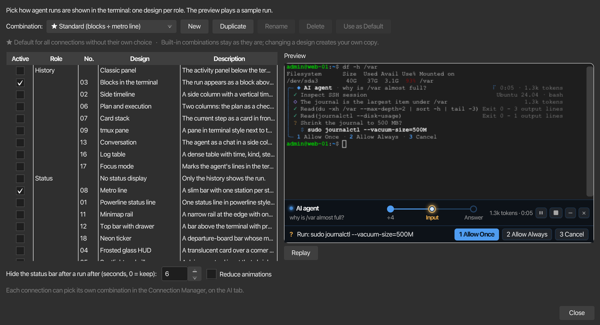
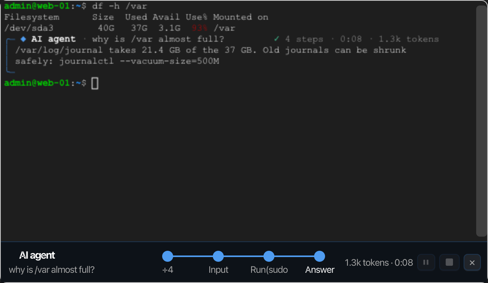
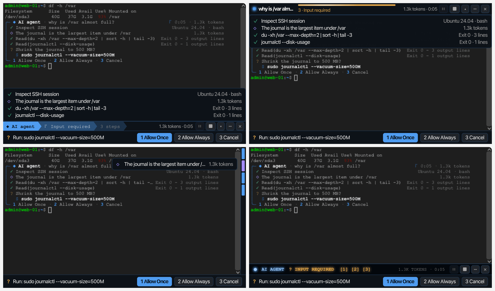
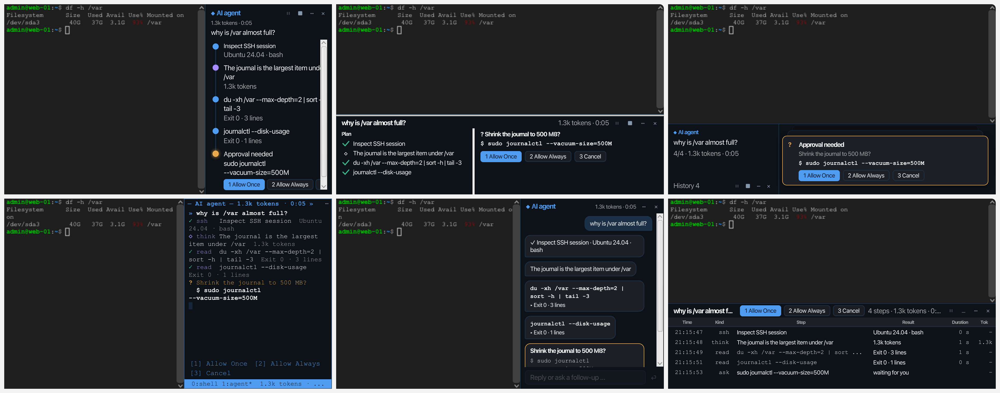
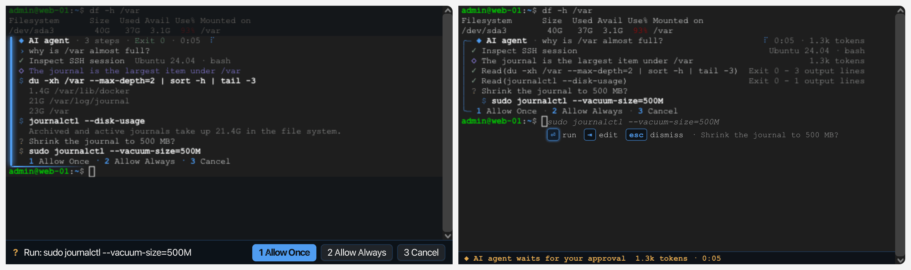
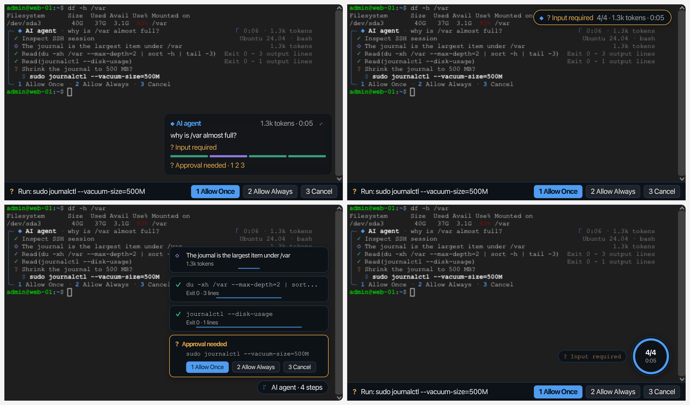
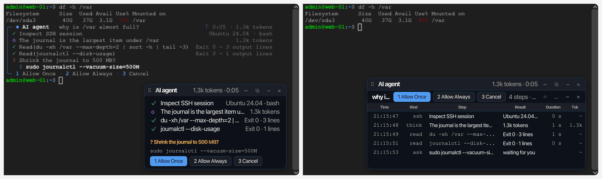

KI-Agent-Designs¶
Plugins → KI-Agent Design bestimmt, wie die Ausführungen des KI-Agent im Terminal angezeigt werden: als Zeilen im Terminal selbst, in einer schmalen Leiste darunter oder darüber, auf einer Schiene oder in einer Spalte daneben, als Karte, die darüber schwebt, im klassischen Aktivitäts-Panel oder in einer Kombination davon. Eine Kombination wählt für jede Rolle ein Design aus, und Sie können eine Kombination als Standard festlegen und einzelnen Verbindungen eine andere zuweisen.

Öffnen Sie es über Plugins → KI-Agent Design oder Ansicht → KI-Agent-Panel → Design.... Wenn Tool-Fenster als Tabs öffnen aktiviert ist, wird es als Tab des Hauptfensters geöffnet. Eine Organisationsrichtlinie, die Plugins nicht zulässt, sperrt beide Einträge.
Rollen und Designs¶
Die Tabelle listet jedes Design mit seiner Nummer, gruppiert nach Rolle. Ein Haken in Aktiv wählt das Design für seine Rolle in der angezeigten Kombination aus, sodass jede Rolle immer genau einen Haken hat.
| Rolle | Was es entscheidet | Designs, die Sie wählen können |
|---|---|---|
| Verlauf | Hier werden die Schritte eines Laufs aufgelistet | Blöcke im Terminal (03), Zeitachse an der Seite (02), Plan und Ausführung (06), Kartenstapel (07), tmux-Bereich (09), Gesprächsverlauf (13), Protokoll-Tabelle (16), Fokus-Modus (17), Klassisches Panel |
| Status | Eine kompakte Anzeige des aktuellen Standes der Ausführung, neben dem Verlauf | Linienplan (08), Powerline-Statuszeile (01), Minimap-Schiene (11), Kopfleiste mit Schublade (12), Neon-Laufschrift (18), Milchglas-HUD (04), Spotlight und Pille (05), Meldungen am Rand (10), Orbit-Anzeige (15), Keine Statusanzeige |
| Freigabe | Wo Freigabe-Anfragen beantwortet werden | Im Verlauf, Vorschlag an der Cursorzeile (14) |
| Anordnung | Wo die Teile platziert werden | Fest, Bild im Bild (19), Mitdenkendes Dock (20) |
Eine von einer neueren korTTY-Version gespeicherte Kombination, die ein Design benennt, das diese Version nicht kennt, verwendet stattdessen das Design der Standardkombination für diese Rolle.
Kombinationen¶
| Kombination | Verlauf | Status |
|---|---|---|
| Standard (Blöcke + Linienplan) | Blöcke im Terminal | Linienplan |
| Klassisch | Klassisches Panel | Keine Statusanzeige |
Standard ist die Vorgabe für jede Verbindung, die keine eigene Kombination wählt; die Vorgabe ist in der Liste mit ★ markiert. Die beiden eingebauten Kombinationen können nicht geändert werden: Wenn Sie ein anderes Design auswählen, während eine dieser angezeigt wird, erstellen Sie Ihre eigene Kopie mit dieser Änderung. Neu startet eine Kopie der Standardkombination, Duplizieren kopiert die angezeigte, Umbenennen und Löschen wirken sich auf Ihre eigenen Kombinationen aus, und Als Standard verwenden macht die angezeigte Kombination zur Vorgabe. Das Löschen der Vorgabe lässt Standard erneut als Vorgabe gelten. Jede Änderung wird sofort gespeichert.
Vorschau¶
Die Vorschau ist ein echtes Terminalpaneel mit einer kurzen Shell-Sitzung, in der eine Beispielausführung abgespielt wird: Der Agent untersucht die Sitzung, analysiert sie, führt zwei Befehle aus, bittet darum, das Journal zu verkleinern, erhält die Antwort 1 und beendet sich mit seiner Antwort. Er verwendet Ihre Standardterminalfarben und Schrift, etwas kleiner. Das Auswählen einer Zeile in der Tabelle zeigt dieses Design in der aktuellen Kombination an, ohne es zu speichern; Erneut abspielen startet die Ausführung erneut.

Blöcke im Terminal (03)¶
Der Lauf erscheint als Block direkt über der Promptzeile des Shells. Sein Header nennt den Agenten und Ihre Frage, zeigt die vergangene Zeit sowie die gemeldeten Tokens; darunter gibt es eine Zeile pro Schritt mit dessen Ergebnis, und der laufende Schritt zeigt einen kleinen Spinner. korTTY schreibt den Block direkt in das Terminal und sendet nichts an den Server, und die Promptzeile, in der Sie tippen, wird nie neu geschrieben, sodass Sie den nächsten Befehl eingeben können, während der Agent arbeitet.
- Ctrl+R zeigt oder verbirgt die Details der Schritte, Esc oder Ctrl+C bricht den Lauf ab.
- Eine Genehmigung listet die geplanten Befehle mit den Tasten 1 (einmal erlauben), 2 (immer erlauben) und 3 (abbrechen); während sie geöffnet ist, beantworten diese Ziffern die Genehmigung und erreichen die Shell nicht.
- Wenn die Ausführung endet, wird der Block zu einer Überschrift mit ✓ (oder abgebrochen, fehlgeschlagen), der Anzahl der Schritte, der Zeit und den Tokens zusammengeklappt, gefolgt von der Antwort. Der Block bleibt dann im Scrollback wie jede andere Ausgabe und wird in das Sitzungsjournal aufgenommen.
- Die Antwort ist Teil des Blocks, daher gilt die Option Endergebnis auch im Terminal anzeigen der Ausführungsdialog nur für Kombinationen ohne Blöcke.
- Solange ein Vollbildprogramm wie
lessodervimgeöffnet ist, wartet der Block und holt anschließend auf. Ein Block, der während der Ausführung vom Bildschirm gescrollt wurde, setzt in einem neuen Block über dem Prompt fort.
Linienplan (08)¶
Eine schmale Leiste unter dem Terminal zeigt die Ausführung als Metro-Linie: eine Station pro Befehl, Analyse und Frage sowie eine Antwort-Station am Ende. Erreichte Stationen sind ausgefüllt, die aktuelle pulsiert, eine Station, die auf Ihre Eingabe wartet, leuchtet amberfarben und ein Licht bewegt sich entlang der Linie, während die Ausführung fortschreitet; wenn es mehr Stationen gibt als passen, werden die ältesten zusammengefasst als +N. Die Leiste zeigt außerdem die Frage, die Tokens und die Zeit an und verfügt über Schaltflächen zum Pausieren, Abbrechen und Ausblenden.
Die Leiste blendet sich einige Sekunden nach dem Ende der letzten Ausführung aus; die Verzögerung wird im Dialog festgelegt. Ansicht → KI-Agent-Panel → Statusleiste ein- oder ausblenden blendet sie wieder ein oder aus.
Weitere Statusanzeigen¶
Wie der Linienplan (08) folgt jede Anzeige hier der Terminal-Ausführung, die auf Eingabe wartet, oder andernfalls deren neuester noch laufender Ausführung, und blendet nach dem Ende der letzten Ausführung aus. Ansicht → KI-Agent-Panel → Statusleiste ein- oder ausblenden blendet eine davon wieder ein oder aus. Eine Anzeige oberhalb oder neben dem Terminal nimmt dem Terminal Platz weg, während sie angezeigt wird.

- Powerline-Statuszeile (01) — Eine Zeile unter dem Terminal im Powerline-Stil: der Agent, der Schritt, an dem er arbeitet (mit Spinner), wie viele Befehle er ausgeführt hat, die Tokens und die Zeit. ▴ faltet die Schritte der Ausführung über die untersten Terminalzeilen auf und ▾ faltet sie wieder zusammen; eine offene Genehmigung faltet sie von selbst auf.
- Kopfleiste mit Schublade (12) — Eine Leiste über dem Terminal, die nicht im Weg des Prompts und der neuesten Ausgabe steht. Eine schimmernde Linie zeigt an, dass der Agent arbeitet, und wird grün oder rot, wenn die Ausführung endet; darunter die Anzahl der Befehle und der aktuelle Schritt. ▾ klappt die Schritte über die ältere Ausgabe.
- Minimap-Schiene (11) — Eine schmale Schiene am rechten Rand des Terminals mit einem farbigen Segment pro Schritt: blau für Befehle, violett für Analysen, bernsteinfarben für Fragen, rot für Fehler. Der laufende Schritt leuchtet. Beim Zeigen auf ein Segment wird eine Linse mit dem Schritt, seinem Ergebnis und den ersten Zeilen seiner Details angezeigt. Die Schiene hat keine Schaltflächen; Esc bricht die Ausführung ab.
- Neon-Laufschrift (18) — Eine Leiste im Stil einer Fallblattanzeige unterhalb des Terminals im Neon-Look des korTTY-Logos: Jeder neue Schritt rollt in sein Fenster, eine offene Frage leuchtet bernsteinfarben mit ihren Tasten, und das Licht links pulsiert, während der Agent arbeitet. Bei einem hellen Theme verwendet die Leiste die Farben dieses Themes.
Verlaufs-Panels¶
Statt Zeilen im Terminal listen diese Designs den Lauf in einem Panel unter oder neben dem Terminal auf. Ein Panel bleibt nach dem Ende des Laufs erhalten, sodass sein Ergebnis weiterhin gelesen werden kann; ✕ blendet es bis zum nächsten Lauf aus, und Ansicht → KI-Agent-Panel → Statusleiste ein- oder ausblenden blendet es wieder ein. Jedes Panel zeigt eine offene Genehmigung mit ihren Schaltflächen, und die Tasten 1, 2 und 3 beantworten sie ebenfalls im Terminal. Die Antwort wird wie zuvor auch in das Terminal geschrieben.

- Zeitachse an der Seite (02) — Eine Spalte rechts neben dem Terminal mit einer vertikalen Linie und einem Knoten pro Schritt: Befehle in Blau, Analysen in Violett, eine offene Genehmigung in Bernstein mit ihren Buttons direkt am Knoten, die Antwort am Ende. Die Linie zeichnet sich zu jedem neuen Knoten und der laufende Knoten pulsiert. Das Terminal behält seine volle Höhe bei.
- Plan und Ausführung (06) — Zwei Spalten unter dem Terminal. Links die Schritte des Laufs als Checkliste, deren Häkchen sich selbst zeichnen; rechts nur das, was gerade läuft: der Befehl mit seinem Exit-Code und seinen letzten Ausgabezeilen, eine offene Genehmigung oder nach dem Lauf die Antwort. Eine dünne Leiste oben füllt sich mit dem Fortschritt.
- Kartenstapel (07) — Unterhalb des Terminals befindet sich eine schmale Spalte mit der Frage, dem Fortschritt und den Schaltflächen, und daneben ein Kartenstapel: der aktuelle Schritt ganz vorne, die beiden vorherigen schauen von hinten hervor. Das Mausrad blättert durch die älteren Schritte; eine Genehmigung ist die vordere Karte mit ihren Schaltflächen.
- tmux-Bereich (09) — Ein Bereich rechts neben dem Terminal in der Schriftart und den Farben des Terminals, von Linien gerahmt: eine Zeile pro Schritt mit dessen Art (
ssh,read,run,think), die Antwort, die hinter einem Block-Cursor ausgegeben wird, und eine blaue Statuszeile am unteren Rand. Er nimmt etwa 40 % der Breite ein. - Gesprächsverlauf (13) — Ein Chat in einer Spalte rechts neben dem Terminal: Ihre Frage rechts, der Agent links mit seinen Gedanken als Text und seinen Befehlen als Codeblöcke mit deren Exit-Code, die sich mit einem Klick zu ihrer Ausgabe aufklappen. Drei Punkte hüpfen, während er arbeitet. Das Feld unten stellt eine Anschlussfrage, die einen neuen Lauf im selben Terminal startet, sobald der aktuelle beendet ist.
- Protokoll-Tabelle (16) — Eine dichte Tabelle unter dem Terminal mit der Zeit, Art, Schritt, Ergebnis, Dauer und Tokenzahl jedes Schritts. Eine neue Zeile blinkt blau, die laufende Zeile hat einen kleinen Spinner, und eine offene Genehmigung verschiebt ihre Schaltflächen in die Kopfzeile. Ein Doppelklick auf eine Zeile zeigt deren Ausgabe, auf der letzten Zeile die Antwort.
Im Terminal: Fokus-Modus und die Cursorzeile¶

- Fokus-Modus (17) — Ein Verlaufs-Design, das in das Terminal schreibt, was der Agent tut, als hätte er es selbst eingegeben: jeder Befehl als
$ commandmit seinen letzten Ausgabezeilen, seine Schlussfolgerungen, eine offene Genehmigung mit ihren Tasten und nach dem Lauf die Antwort. Ein leuchtender Balken markiert diese Zeilen, ein Licht läuft darunter entlang, während der Agent arbeitet, und der Rest des Terminals wird abgedunkelt; die Zeile, die Sie eingeben, bleibt hell. Wenn der Lauf endet, wird das Terminal wieder heller und die Zeilen bleiben im Scrollback. - Vorschlag an der Cursorzeile (14) — Ein Genehmigungsdesign: Der Befehl, den der Agent ausführen möchte, erscheint als Geister-Text genau dort, wo Sie tippen, mit einem Hinweis darunter, und eine Zeile am unteren Rand des Terminals zeigt an, dass der Agent wartet. Enter führt ihn einmal aus; Tab übernimmt: Die Ausführung endet und der Befehl wird am Prompt eingegeben, damit Sie ihn bearbeiten können; Esc lehnt ab. Die Tasten 1, 2 und 3 antworten wie überall. Eine Passwortanfrage verwendet weiterhin die Zeile unter dem Terminal.
Schwebende Anzeigen¶
Diese Status-Designs schweben über dem Terminal, das seine volle Größe beibehält. Sie bleiben von den Zeilen unterhalb des Terminals fern und werden nach Beendigung der letzten Ausführung ausgeblendet, wie die Balken.

- Milchglas-HUD (04) — Eine halbtransparente Karte über der unteren rechten Ecke mit der Frage, dem gerade ausgeführten Schritt, dem Fortschritt in Segmenten und den Tokens. Während Sie im Terminal tippen, blendet sie sich auf 35 % ab, damit der Text darunter lesbar bleibt. ⤢ faltet die Schritte der Ausführung darüber auf.
- Spotlight und Pille (05) — Eine kleine Pille in der oberen rechten Ecke mit dem aktuellen Schritt, wie weit der Lauf fortgeschritten ist und der Zeit; ein Klick faltet die Schritte darunter aus. Ansicht → KI-Agent-Panel → In Spotlight fragen … öffnet ein Feld in der Mitte des Terminals, in dem Sie den Agenten befragen, mit dem zu verwendenden Profil und Ihren früheren Fragen auf Up und Down. Enter startet den Lauf so, wie
agent …es in der Shell würde, und das Feld schrumpft zur Pille. - Meldungen am Rand (10) — Jeder abgeschlossene Schritt erscheint als kurze Benachrichtigung unten rechts und verschwindet nach wenigen Sekunden wieder; ein Balken in jedem zeigt an, wann. Eine Genehmigung bleibt bis sie beantwortet wurde, mit ihren Schaltflächen. Ein Abzeichen zählt die Schritte; ein Klick darauf zeigt sie alle an.
- Orbit-Anzeige (15) — Ein 72-Pixel-Kreis in der unteren rechten Ecke: Sein Ring füllt sich mit dem Fortschritt des Laufs, Punkte kreisen darum, während der Agent arbeitet, und in der Mitte werden die Schrittzahl und die Zeit angezeigt; ein Label daneben benennt den aktuellen Befehl. Ein Klick lässt die Schritte aus dem Kreis herausblühen.
Anordnungen¶

- Bild im Bild (19) — Ein kleines Fenster, das über dem Terminal schwebt. Ziehen Sie es am Titel, und es zeigt die vier Ecken, in die es sich bewegen kann, und springt beim Loslassen in die nächstgelegene. ⧉ macht es zu einem eigenen Fenster, beispielsweise für einen zweiten Bildschirm, und dockt es zurück; – faltet es auf seinen Titel zusammen, × blendet es bis zum nächsten Lauf aus. Mit einem Verlaufs-Panel in der Kombination hält das Fenster dieses Panel; andernfalls listet es die Schritte des Laufs und eine offene Genehmigung mit ihren Schaltflächen. Mehrere Läufe im selben Terminal werden zu Tabs.
- Mitdenkendes Dock (20) — Wählt die Statusanzeige anhand der Terminalgröße: ein breites und hohes Terminal (ab 150 Spalten und 30 Zeilen) erhält die Zeitachse an der Seite, ein kleines (unter 70 Spalten oder 16 Zeilen) die Statuspille, alles dazwischen die Powerline-Statuszeile. Eine einmal gewählte Anzeige bleibt bestehen, bis die Größe eindeutig auf der anderen Seite liegt, sodass das Ziehen einer Aufteilung nicht zum Flackern führt. Nach dem letzten Lauf zeigt ein Countdown-Ring an, wie lange das Ergebnis bleibt.
Genehmigungen und Passwörter¶
Eine Genehmigung wird im Terminal mit den Tasten 1 (einmal erlauben), 2 (immer erlauben) und 3 (abbrechen) oder mit Buttons beantwortet. Designs mit eigenen Buttons zeigen diese an: die Verlaufs-Panels, die Meldungen am Rand und das Bild-im-Bild-Fenster. Bei Blöcken im Terminal, im Fokus-Modus oder im Verlauf des klassischen Panels öffnet eine Genehmigung eine Zeile unter dem Terminal mit den Befehlen und den Buttons 1 Einmal erlauben, 2 Immer erlauben und 3 Abbrechen. Eine Passwortanfrage öffnet diese Zeile immer, mit einem maskierten Feld, Für diese SSH-Sitzung verwenden und OK; Enter sendet ab und Esc bricht ab. Das klassische Panel behält seine eigenen Prompts bei.
Lauf-Menü und Schritt-Menü¶
Jedes Design bietet das, was die Buttons des klassischen Panels tun. Die Leisten, die Verlaufs-Panels, das Milchglas-HUD und das Bild-im-Bild-Fenster haben einen ⋯-Button; die Statuspille, die Orbit-Anzeige, die Minimap-Schiene und das Abzeichen der Meldungen am Rand öffnen dasselbe Menü per Rechtsklick. Es funktioniert bei dem Lauf, den das Design zeigt:
| Eintrag | Effekt |
|---|---|
| Arbeitsablauf … | Wandelt die fertige Ausführung in ein wiederverwendbares Skript um, siehe Workflow-Skript erzeugen |
| Diesen Lauf exportieren | Speichert den fertigen Lauf als Markdown, Text, YAML, XML, JSON, PDF oder Asciidoctor |
| Alle Läufe exportieren | Speichert jeden abgeschlossenen Lauf, den das Terminal aufbewahrt, in einer Datei |
| Erneut ausführen | Führt denselben Agent-Befehl erneut aus |
| Antwort kopieren | Kopiert die Antwort der Ausführung |
| Läufe dieses Terminals | Zeigt einen anderen Lauf des Terminals: die noch laufenden und die letzten fünf beendeten |
Die in das Terminal gezeichneten Designs (Blöcke, Fokus-Modus, der Vorschlag an der Cursorzeile) bieten dieselben Einträge im Kontextmenü des Terminals unter KI → Letzter Agent-Lauf.
Ein Rechtsklick auf einen Schritt öffnet ein eigenes Menü mit Befehl kopieren, Ausgabe kopieren, Eintrag kopieren und Im Snippet-Editor öffnen. Das funktioniert auf einem Knoten der Zeitachse an der Seite, einer Zeile des Plans oder der Protokoll-Tabelle, einer Karte des Kartenstapels, einem Block des Gesprächsverlaufs, einer Zeile des tmux-Bereichs, einem Segment der Minimap-Schiene, einer Meldung am Rand und einem Schritt im Bild-im-Bild-Fenster.
Optionen¶
| Option | Wirkung |
|---|---|
| Statusleiste nach einem Lauf ausblenden, nach (Sekunden, 0 = beibehalten) | Wie lange die Statusanzeige nach dem letzten Lauf verbleibt; 0 behält sie bei, bis Sie sie ausblenden. Standard: 6 Sekunden. |
| Animationen reduzieren | Schaltet die bewegten Elemente aller Designs ab: das Pulsieren der Station und das bewegte Licht des Linienplans, die Ladeindikatoren, das Schimmern der Kopfleiste mit Schublade, das Rollen und Leuchten der Neon-Laufschrift, die Linsen-Animation der Minimap-Schiene, das Gleiten, Ploppen und Blühen der Verlaufs-Panel und schwebenden Anzeigen, das Tippen im tmux-Bereich und der Geistertext, das Glas des Milchglas-HUD und das Verblassen des Fokus-Modus. |
Ein Design pro Verbindung¶
Der KI Tab des Verbindungseditors enthält eine Liste mit KI-Agent Design: Standard verwenden (mit dem Namen des aktuellen Standards) oder jede Kombination. Die Auswahl gilt ab dem nächsten Lauf dieser Verbindung. Da Ihre eigenen Kombinationen in den Einstellungen dieses Computers gespeichert sind, ist die Auswahl nicht Teil einer exportierten Verbindung; eine Verbindung, deren Kombination gelöscht wurde, zeigt Gespeicherte Kombination (derzeit nicht verfügbar) und verwendet den Standard.
Farben¶
Die Designs übernehmen ihre Farben aus den Terminal-KI-Agent-Fenster Farben des Terminal-Themas der Verbindung, die der Theme-Editor auf dem Themes Tab anzeigt. Ein Thema, dessen Cursor weiß oder grau ist, erhält einen blauen Akzent, ein helleres auf dunklen Themen und ein dunkleres auf hellen Themen; der Hintergrund des Panels folgt dem eigenen Hintergrund des Terminals mit nur einer dezenten Tönung. Agentenpanel-Farben, die korTTY für ein Thema vor dem blauen Akzent abgeleitet hat, werden erneut einmal abgeleitet; Farben, die Sie selbst ausgewählt haben, bleiben erhalten. Grün bleibt für abgeschlossene Schritte.
An den Rand angedockt¶
Ansicht → KI-Agent-Panel → Links andocken oder Rechts andocken zeigt das klassische Panel im Seitendock; Blöcke erscheinen weiterhin im Terminal, und die Metro-Linie bewegt sich in das Dock mit dem Panel.
Gespeicherte Einstellungen¶
| Datei | Element | Bedeutung |
|---|---|---|
global-settings.xml |
aiAgentDesignDefaultId |
Die Standardkombination; fehlt für Standard |
global-settings.xml |
aiAgentDesignCombinations |
Ihre eigenen Kombinationen, jeweils ein combination-Element |
global-settings.xml |
aiAgentDesignAutoHideSeconds |
Die Statusleistenverzögerung; fehlt für 6 Sekunden |
global-settings.xml |
aiAgentDesignReducedAnimations |
Animationen reduzieren |
connections.xml |
aiAgentDesignId |
Die eigene Kombination der Verbindung; bei der Standardverbindung nicht vorhanden |